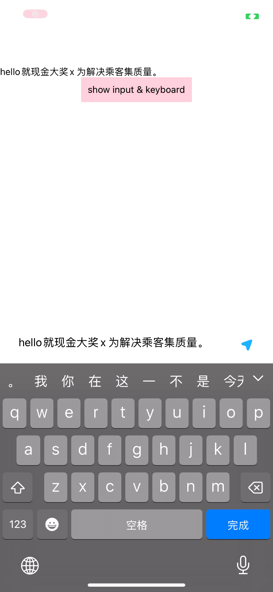

封装 低耦合、易用的文本输入框弹窗
效果展示/UI
- 切换输入法，避开键盘
- 输入/粘帖时，文字换行，输入框高度准确变化

使用/Usage
封装后，如下这样使用，解耦的干干净净
import TextInputAlert from "./TextInputAlert";
TextInputAlert.show({
text: "hello",
// maxLength: 20,
onChange: function didInputChange(text_) {
console.log("didInputChange::>>", text_);
},
onCompleted: () => {
console.log("onCompleted::>>", content);
},
});
TextInputAlert.hide();
像原生一样调api方式展示弹窗，不需要Modal那样耦合过多（视图嵌入、visible字段控制…）